Se Builder is a Firefox add-on that lets you easily create Selenium tests. The Sauce Plugin for Se Builder adds built-in support for Sauce Labs' infrastructure so you can run your tests across multiple browsers in parallel, no infrastructure set up required.
| Install Se Builder. | 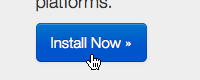 |
| Launch Se Builder. | 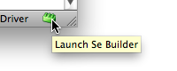 |
| In the startup page, choose "Plugins". | 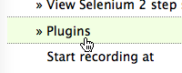 |
| Click "Install" in the entry for "Sauce for Se Builder". | 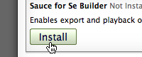 |
| Once the plugin download is complete, close Se Builder. | 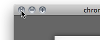 |
| Launch Se Builder again. | |
| Enter "http://www.sebuilder.com" into the "Start recording at" field. | 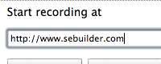 |
| Click the "Selenium 2" button. This causes recording to start. The main browser window will navigate to the Se Builder site. | 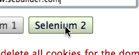 |
| Once the page has loaded, click the "Record a verification" button. | 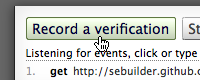 |
| Click on the big "Se Builder" on the page. | 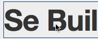 |
| Click on "Stop recording". | 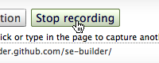 |
| Select "Run on Sauce OnDemand" from the "Run" menu. | 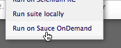 |
| Enter your Sauce username and access key into the dialog that appears. | 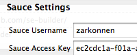 |
| Click the "OK" button. | 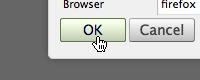 |
| Playback begins! | 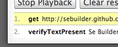 |
| You can see in-progress and finished OnDemand tests on your Sauce account page. | 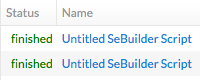 |